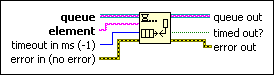
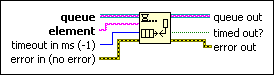

Enqueue Element At Opposite End Function
Owning Palette: Queue Operations Functions
Requires: Base Development System
Adds an element to the front of a queue.

 Add to the block diagram Add to the block diagram |
 Find on the palette Find on the palette |
Owning Palette: Queue Operations Functions
Requires: Base Development System
Adds an element to the front of a queue.

| Add to the block diagram |
Find on the palette |
 |
queue is a reference to a queue. Use the Obtain Queue function to obtain a queue reference. |
 |
element is the element you want to add to the front of the queue. This data type changes to match the subtype of queue. |
 |
timeout in ms specifies the time, in milliseconds, that the function waits for available space in the queue if the queue is full. The default is –1, indicating never to time out. If the function waits timeout in ms and the queue remains full, timed out? is TRUE. |
 |
error in describes error conditions that occur before this node runs. This input provides standard error in functionality. |
 |
queue out returns the reference to the queue unchanged. |
 |
timed out? returns TRUE if space in the queue did not become available before the function times out. timed out? also returns TRUE if this function encounters an error. |
 |
error out contains error information. This output provides standard error out functionality. |
This function is similar to the Enqueue Element function. If the queue is full, the function waits timeout in ms before continuing. If queue becomes invalid (for example, the queue reference is released), the function stops waiting and returns error code 1122.
Queues typically use a first-in-first-out flow of data. In rare situations, you might want to interrupt this normal flow of data by adding an element to the front of the queue. After you add an element to the front of a queue, the next Dequeue Element function you call removes the element you added to the front. For example, you could use this function if you want to use the queue as a stack structure or add high-priority elements to the front of the queue.
Refer to the Queue Stack Maze Solver VI in the labview\examples\Synchronization\Queue directory for an example of using the Enqueue Element At Opposite End function.
 Open example Find related examples
Open example Find related examples